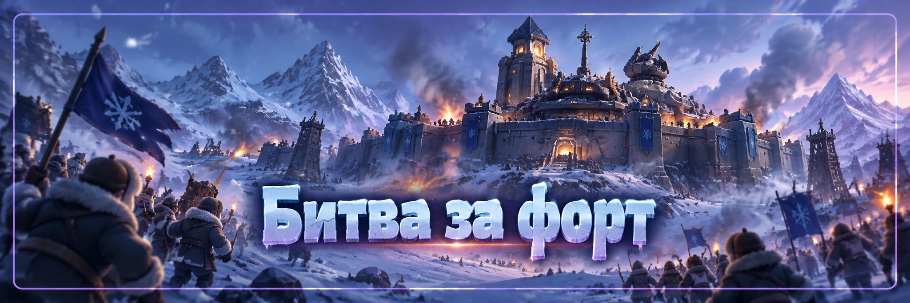

Форты
Битвы за форт — альянсовое событие, в котором несколько альянсов могут бороться за контроль над фортом.
Главная задача здесь не просто один раз победить защитников. Нужно: выбрать правильную цель → собрать сильный рейд → захватить форт → удержать его.
Главный ресурс события — не отдельный сильный игрок, а координация всего альянса.
Регистрация
Регистрацией на Битву за форт занимается руководство альянса: R4 / R5.
Во время регистрации руководство выбирает форт, за который альянс хочет сражаться. Также выбираются 3 предпочтительных варианта времени.
Это ещё не означает, что бой обязательно начнётся в одном из выбранных вами часов. Окончательное время определяется системой с учётом выбора других альянсов, зарегистрированных на тот же объект.
После окончания регистрации обязательно ещё раз проверьте реальное время боя.
Какой форт выбирать
Награды у фортов могут различаться. Перед регистрацией R4/R5 лучше открыть нужный форт и посмотреть:
- какие награды доступны сейчас;
- нужен ли этот форт альянсу;
- сколько соперников на него зарегистрировано;
- в какое время альянс сможет собрать больше активных игроков.
Для 58 государства ориентируемся именно на награды, показанные сейчас в вашем игровом интерфейсе. Не используем старые таблицы наград из других государств.
Почему может быть несколько целей
Если альянс уже захватил форт на предыдущей стадии, этот форт может автоматически перейти в регистрацию на следующую стадию.
При этом руководство может получить возможность зарегистрироваться ещё на новую цель.
Поэтому иногда альянс одновременно видит несколько боёв. В такой ситуации R4/R5 заранее определяют приоритет:
какой форт обязателен → какой второстепенный → какой можно отдать.
Не распыляйте основные силы без необходимости.
Перед началом боя
Участнику желательно заранее:
- быть онлайн;
- освободить очереди походов;
- вернуть ненужные походы со сбора;
- проверить войска;
- проверить героев;
- подготовить боевой отряд;
- посмотреть сообщения, метки и команды R4/R5;
- точно знать, в какой рейд нужно вступать.
Не начинайте собственный рейд без команды, если руководство уже назначило капитанов.
Что происходит в начале
В начале боя внутри форта находится гарнизон наёмников «Фаэтона».
Сначала необходимо победить NPC и занять здание.
После этого, если на тот же форт зарегистрированы другие альянсы, начинается настоящая борьба за удержание.
Рейд или одиночная атака
Игра позволяет атаковать форт как рейдом или одиночной атакой.
Но для альянсовой игры обычно лучше использовать организованный рейд.
Почему:
- в рейде участвует больше войск;
- проще собрать сильных игроков;
- руководство контролирует состав;
- меньше риск, что несколько игроков одновременно откроют слабые рейды;
- проще сразу перейти к удержанию объекта.
Особенно не нужно самостоятельно пытаться забрать самый первый захват NPC, если альянс готовит общий рейд.
Кто должен открывать рейд
Руководству лучше заранее назначить капитанов.
Обычно рейд открывают игроки с:
- сильными боевыми героями;
- хорошими боевыми характеристиками;
- высокой вместимостью рейда;
- подходящим составом войск.
Конкретных героев для 58 государства здесь не фиксируем. Используем тех, кто реально доступен вам сейчас, и сравниваем боевые отчёты.
Сколько войск отправлять
Правило «всегда отправлять полный отряд» не универсально.
Если идёт серьёзный бой с другим альянсом, руководство может попросить отправлять максимально сильные полные отряды.
Но при первом рейде или при большом количестве желающих R4/R5 могут установить лимит войск на человека, чтобы в рейд смогло войти больше участников.
Отправляем столько войск, сколько указало руководство.
Главное правило — 30 минут
Просто войти в форт недостаточно.
Чтобы окончательно получить контроль во время настоящей борьбы, альянс должен удерживать форт:
Если противник выбивает ваш гарнизон до окончания этих 30 минут, непрерывное удержание заканчивается.
После нового захвата отсчёт начинается заново.
Поэтому после первого успешного рейда начинается самая важная часть: оборона.
Если никто не удержал 30 минут
Бой за форт может продолжаться до 2 часов.
Если за это время ни один альянс не смог удерживать объект непрерывно 30 минут, победит альянс, который контролирует форт в момент окончания битвы.
Поэтому последние минуты могут решить весь результат. Если идёт тяжёлый спорный бой, не считайте событие законченным раньше таймера.
После захвата
После успешного входа сразу смотрите команду R4/R5.
Если форт нужно удерживать:
- отправляйте подкрепления;
- заменяйте ослабленные отряды;
- следите за вместимостью гарнизона;
- не забивайте гарнизон случайными слабыми отрядами;
- будьте готовы к новому рейду противника.
Захват без подкреплений часто заканчивается быстрым выбиванием гарнизона.
Если противник выбил форт
Не атакуйте хаотично каждый сам за себя.
Сначала руководство назначает:
капитана рейда → время → состав → участников.
Затем собирается один сильный удар.
Несколько слабых несогласованных атак обычно только дают противнику время укрепить гарнизон.
Нужны ли стяги рядом с фортом
Для Битвы за форт не нужно специально тянуть территорию альянса стягами прямо к объекту.
Это отличается от механики некоторых комплексов.
Главное здесь — регистрация на сам форт.
Награды
В событии существует несколько типов наград. Они могут быть связаны с:
- первым захватом;
- участием в бою;
- итоговым контролем над фортом;
- результатами сезона.
Точный состав наград проверяем непосредственно на выбранном форте в 58 государстве.
Не обещаем каждому игроку одинаковую награду только за вход в рейд. Механика наград и очков зависит от конкретного действия во время боя.
Очки
Сам факт нахождения в рейде ещё не гарантирует очки за бой.
Если противников уничтожили другие участники и ваши войска фактически не участвовали в уничтожении врагов, индивидуальные очки могут не начислиться.
Поэтому не ориентируйтесь только на число отправленных походов. Главный результат для альянса — захват и удержание форта.
После победы
После успешного захвата наступает защищённый период, когда форт нельзя атаковать.
При следующей соответствующей битве в нём снова появляется NPC-гарнизон.
То есть старые войска не остаются внутри навсегда. Перед следующим боем всё начинается заново с новой подготовки.
Что делать участнику
- Проверить точное время события.
- Быть онлайн заранее.
- Освободить походы.
- Следить за командами R4/R5.
- Вступать только в назначенный рейд.
- Использовать подходящих боевых героев и сильные войска.
- Соблюдать лимит войск, если его установило руководство.
- После захвата сразу быть готовым отправить подкрепление.
- Не уходить после первого захвата, если продолжается борьба.
- Следить за таймером 30 минут.
Что делать R4/R5
- Выбрать форт по актуальным наградам.
- Выбрать три удобных временных интервала.
- После регистрации проверить окончательное время.
- Назначить капитанов рейдов.
- Заранее сообщить лимит войск участникам.
- Не создавать лишние конкурирующие рейды.
- После захвата быстро организовать гарнизон.
- Следить за непрерывным таймером удержания.
- Если целей несколько, заранее определить приоритет.
Частые ошибки
- Атаковать форт в одиночку без команды.
- Открывать несколько случайных рейдов.
- Считать выбранное при регистрации время окончательным.
- Опоздать к старту.
- Всем отправлять полный отряд, когда руководство установило лимит.
- После первого захвата решить, что победа уже получена.
- Не подкреплять гарнизон.
- Забыть про правило 30 минут непрерывного удержания.
- Выйти из игры, пока идёт двухчасовое окно боя.
- Использовать старые списки героев и наград из других государств.
R4/R5 регистрируют цель.
Выбираются 3 варианта времени, окончательное назначает система.
Основную атаку проводим организованным рейдом.
После захвата сразу готовим подкрепления.
Для полной победы нужно 30 минут непрерывного удержания.
Если никто не удержал 30 минут, через 2 часа победит тот, кто контролирует форт в самом конце.
Не открываем лишние рейды без команды.
Главный принцип:
Форт выигрывается не первым ударом, а тем альянсом, который лучше организует захват и удержание.